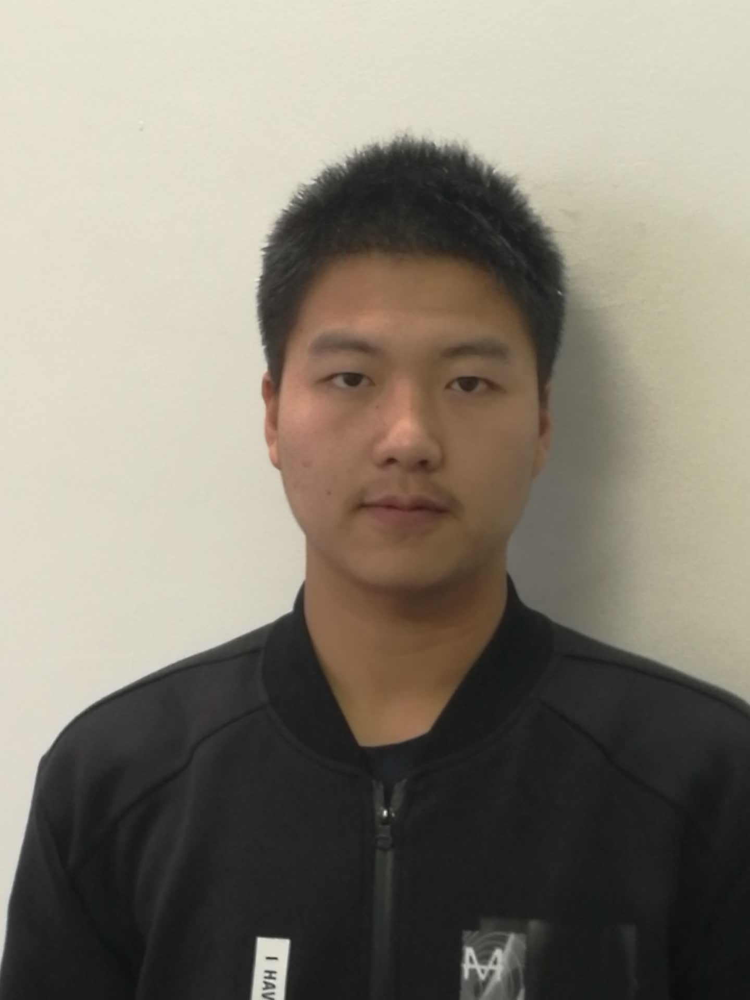

|  |
Wu Taiqiang
I am now in Tsinghua University |
||
|
|
|||
I am now a master student (year 2) from IIG group in Tsinghua University,
supervised by Prof. Yujiu Yang.
I received my bachelor degree in Department of Automation from Tsinghua University in 2020.
ResearchMy major research interests include zero-shot entity linking and pre-trained language model knowledge inherit.Internship2021.3~Now TencentPublications
Personal LinksLast Updated: May. 2022. Visitor number: |
|||